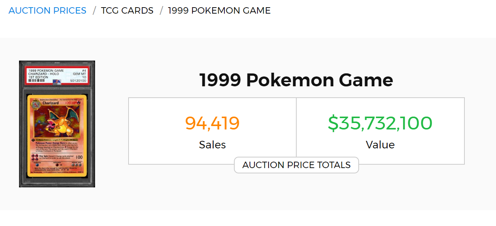
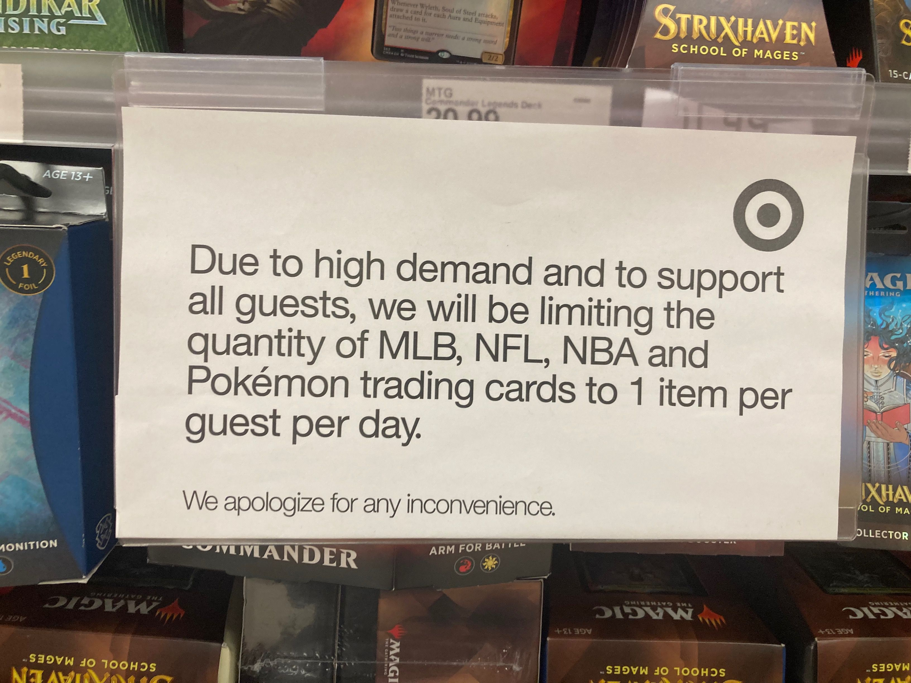

While the increase of the popularity of collecting cards, an unpleasant practice among the communities as well as difficulties among the companies due to the impact of Covid–19. The practice done from the community side would be buyout the product before the rest of its consumers have a chance to buy it from verified vendors. And the issue from the companies side became that of a shortage of printing cards for their playerbase.
Supply and Demand
When cards ae produced for the TCG playerbase, there is a supply–and–demand that comes with obtaining cards. Cards that have a high popularity in play alone will make that card be valued and sought after, and with the factor of rarities and printing control, a strong or well designed card will be coveted by many who choose to play or collect it. This causes a demand for the card to be needed the product made is the general supply that contains the coveted card. This circulation that the playerbase enforce is emphasized in competitive play, were the strongest cards are worth more than the print it carries, and rarity contributes towards that value.
 This supply and demand doesn't directly affect the companies that print them, as they are a primary market that have a fixed value for the product made. Therefore people that wish to trade cards would lean towards a secondary market to determin the value based on demand. Online card stores such as TCGPlayer and CardMarket have people list their cards if they using them to gain monetary value to determine the price based on the demand from the playerbase. Which can both benefit and hurt the player, in such that a strong or well designed card could have immense value that they would not have any similar value when trading with others. For some TCGs, iconic cards that would represent the franchise can hold value for those that want to obtain one. One example being an original set Charizard from Pokémon TCG, which for its monetary value could range from hundreds to hundreds of thousands of dollars. Then the demand to obtain the card would increase its monetary value, and if the supply is no longer a factor, the card becomes scarce, increasing demand to obtain it as well as its value.
Shortages
During the Covid–19 pandemic, companies not only suffered a loss in sales, but a loss in resources, leading to shortages. This shortage of card production would also disrupt the supply–and–demand structure. Cards would become more scarce in for the communities to obtain and then affect its secondary market, causing an inflation for what a card is actually worth. With the supply being low vendors that directly get the product form the companies, there had and likely still is restrictions on how much one person can buy a certai product. Stores had to limit the purchases of cards to one unit per card game category.
Scalping
From the community there is a bad practice of scalping, which is a practice of which people buy product in large sums so that there is very little reamaining for others to buy. The most notable this was practiced in was for the Pokémon TCG. Those who successfully buyout the primary market would then turn to the secondary market to sell their items higher the the Manfactured Retail Suggested Retail Price, or MSRP for short, for sole profit. Scalpers tend to not care nor give interest of the actual product, only of which money can be made from it. This practice spread to other TCGs and it hurt the secondary market, causing card and product to rise towards absurd prices but they would have no choice to purchase from these sellers, as they have the the product while the main vedors who sell at MSRP do not. This was also the reason stores set a limit of how much TCG product one can buy. While it was not the companies' fault to fix the solution of scalping since they were met with an uncontrollable force, looking back with it being so relavent that it makes news headlines, from people waiting in line to buy and re–sell, to even resorting to violence to ensure they will make a profit by selling at a higher price, it makes one wonder "where did the 'Trading' in Trading Card Game go?"
After the Covid stay at home restrictions became less enforced, and TCG Companies were able to get stable production, as well as addressing the shortages and scalping of their product, the value of cards stabilized to some extent. It still left a huge impact toward the secondary market, and will take time to fully stabilize. The brief moment of being able to relive a childhood hobby took out the boredom adults had to face during the pandemic.